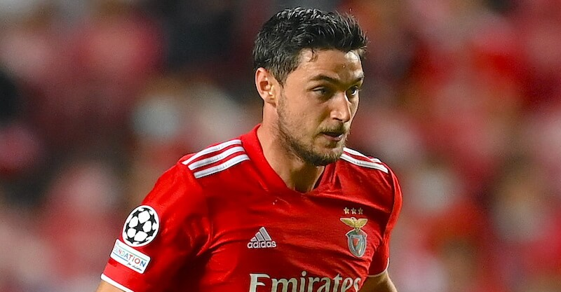
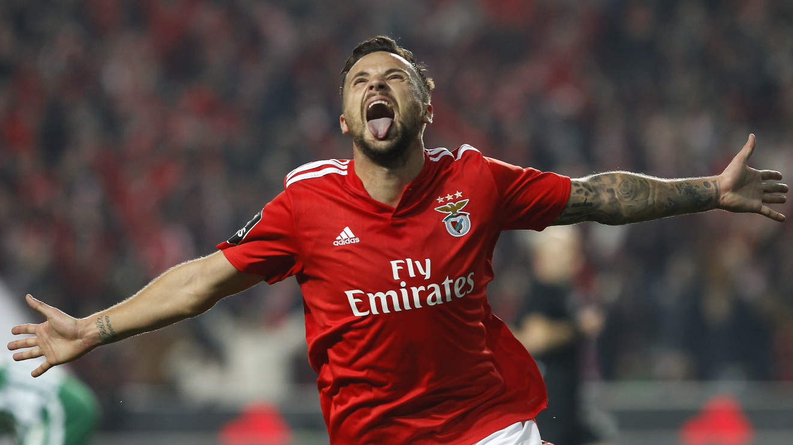
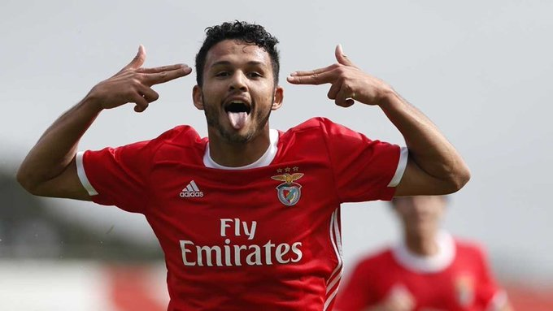
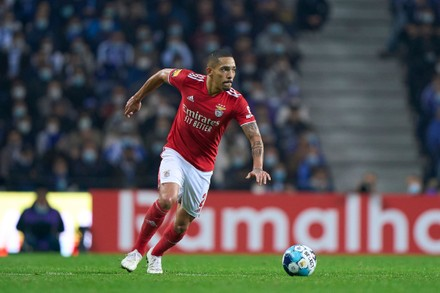
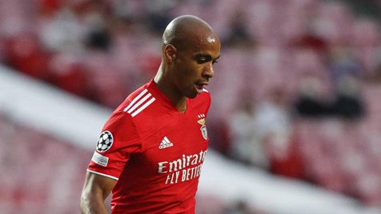
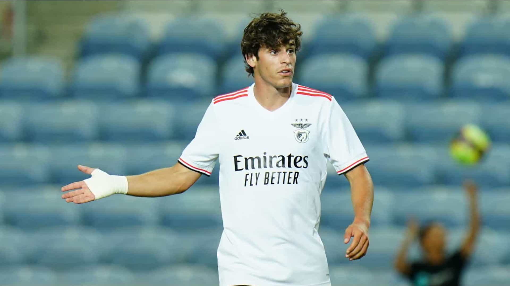
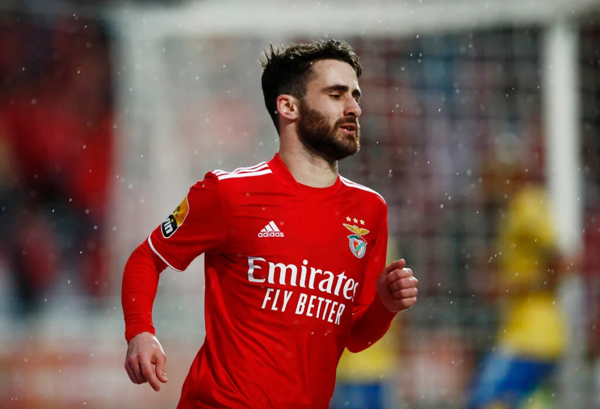

JOUEURS
Les joueurs du club jouent en rouge et blanc et sont surnommés Águias qui signifie aigles ou encore encarnados qui signifie rouges.
Les joueurs de la saison 2022 :

darwin nunez, un footballeur uruguayen qui évolue au poste d'avant-centre à Benfica.

everton, un footballeur brésilien qui évolue au poste d'attaquant à Benfica

yaremchuk, un footballeur ukrainien qui évolue au poste d'attaquant à Benfica

seferovic, un footballeur suisse qui évolue au poste d'attaquant à Benfica

goncalo ramos, un footballeur portugais qui évolue au poste d'avant-centre à Benfica

morato, un footballeur brésilien qui évolue au poste de défenseur central à Benfica

gilberto, un footballeur brésilien qui évolue au poste d'arrière droit à Benfica

joao mario, un footballeur portugais qui évolue au poste de milieu de terrain à Benfica

gil dias, un footballeur portugais qui évolue au poste de milieu de terrain à Benfica

grimaldo, un footballeur espagnol qui évolue au poste de latéral gauche à Benfica

paulo bernardo, un footballeur portugais qui évolue au poste de milieu offensif à Benfica

otamendi, un footballeur argentin qui évolue au poste de défenseur central à Benfica

rafa, un footballeur portugais qui évolue au poste de milieu de terrain à Benfica

vertonghen, un footballeur belge qui évolue au poste de défenseur central à Benfica

odysseas, un footballeur grec qui évolue au poste de gardien à Benfica